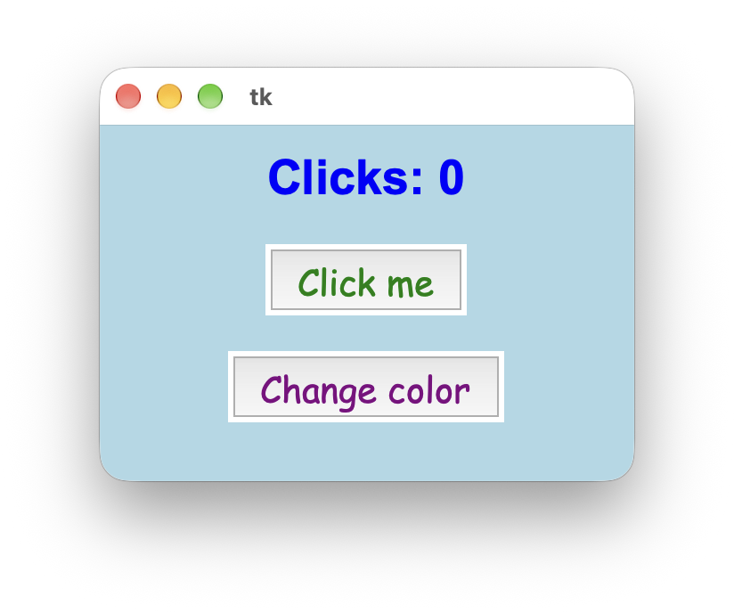
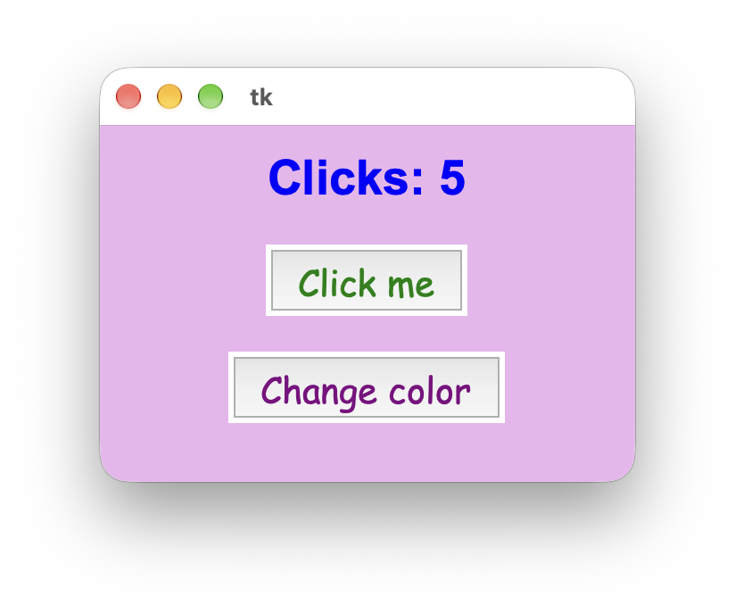
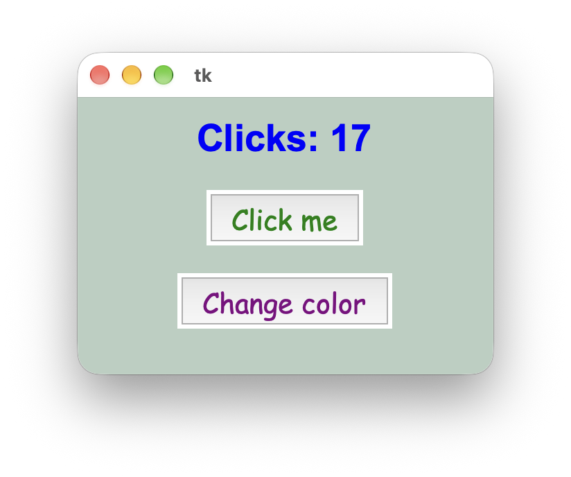
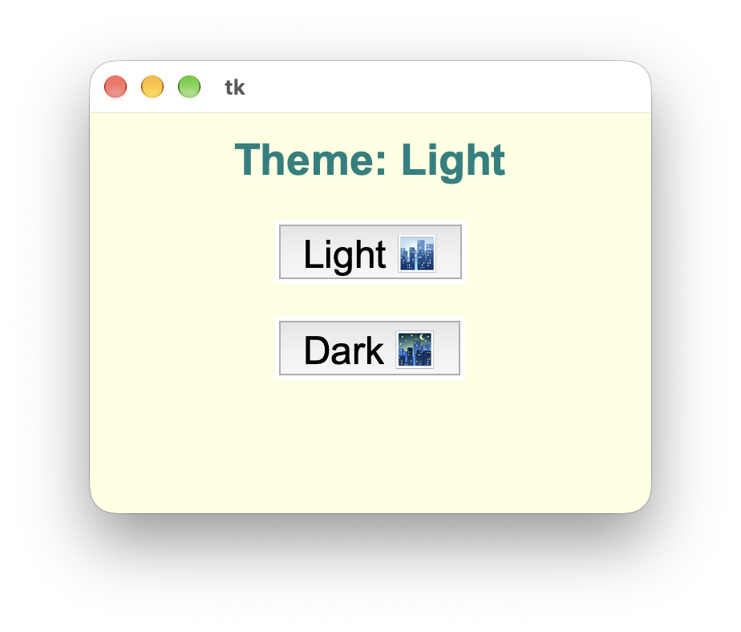
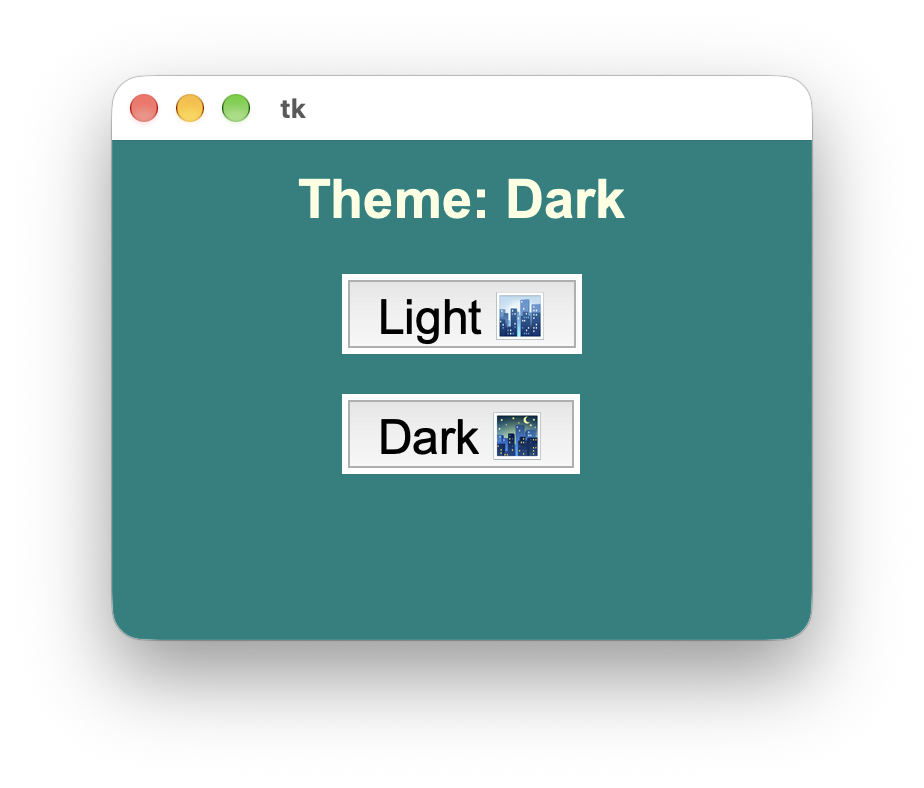

Вікна та кольори
Вікна та кольори
Tkinter
До цього моменту всі наші програми працювали в консолі: ми виводили текст через print() і вводили дані через input().
Сьогодні ми переходимо до GUI (Graphical User Interface) – графічного інтерфейсу користувача. Для цього ми використаємо вбудовану в Python бібліотеку tkinter.
Будь-яка графічна програма складається з двох головних речей:
- Віджети (Widgets) – це всі елементи програми: текст, картинки, кнопки тощо.
- Вікно (Window) – це контейнер, в якому знаходяться всі ті елементи.
from ... import *
Раніше ми підключали модулі так:
import random
number = random.randint(1, 10)Якби ми так само написали import tkinter, то перед кожною командою чи віджетом довелося б писати слово tkinter. Щоб цього уникнути, можна натомість імпортувати модуль так:
from random import *
number = randint(1, 10)Так само можна імпортувати tkinter:
from tkinter import *Зірочка * означає "все" ("з модуля tkinter імпортуй всі інструменти напряму").
Головне вікно
Розглянемо код, який створює порожнє вікно програми:
from tkinter import *
window = Tk()
window.title("My First GUI App")
window.geometry("400x250")
window.config(bg="mistyrose")
# "Магічний" рядок, щоб розмістити вікно рівно по центру екрана
window.eval("tk::PlaceWindow . center")
window.mainloop()Пояснення:
- window = Tk() – створює головне вікно-контейнер і зберігає його у змінну window.
- window.title("...") – задає назву вікна у верхній смужці.
- window.geometry("400x250") – задає розмір вікна у пікселях: "ШиринаxВисота". Між числами стоїть маленька англійська літера x, без пробілів.
- window.config(...) – дозволяє змінити різні налаштування вікна (наприклад, колір фону).
- bg="..." – колір фону (background).
- window.mainloop() – найважливіший рядок, який завжди має бути в самому кінці файлу. Поки що можеш сприймати його як команду, яка відображає вікно на екрані і не дає програмі миттєво закритися, доки ти сама не натиснеш на хрестик.
Кольори
Є два основні способи задати колір в Tkinter:
1. За назвою кольору англійською.
Таблиця красивих кольорів:
| Базові кольори | Світлі (для фону) | Темні (для тексту) |
|---|---|---|
| "white" | "lightblue" | "darkblue" |
| "black" | "lightgreen" | "darkgreen" |
| "red" | "lightyellow" | "crimson" |
| "blue" | "lavender" | "purple" |
| "green" | "mistyrose" | "indigo" |
| "yellow" | "peachpuff" | "teal" |
| "orange" | "aliceblue" | "darkslateblue" |
| "pink" | "honeydew" | "chocolate" |
2. За допомогою HEX-коду.
У дизайні та програмуванні кольори часто записують у форматі #RRGGBB, наприклад: "#ff5733" або "#4a90e2".
- Код завжди починається з решітки #, після якої йдуть 6 символів (цифри 0-9 та літери a-f).
- Перші два символи відповідають за кількість червоного (Red), середні два – зеленого (Green), останні два – синього (Blue). Разом це дозволяє закодувати понад 16 мільйонів відтінків!
Оскільки HEX-код – це насправді число, ми можемо згенерувати випадковий колір за допомогою такого рядка:
color = f"#{random.randint(0, 0xFFFFFF):06x}"Практика
Завдання 1
- Створи новий файл у VS Code та імпортуй усе з бібліотеки tkinter.
- Створи вікно розміром "300x200" та задай йому якийсь колір фону.
- Додай рядок для центрування вікна на екрані.
- Не забудь викликати mainloop().
 Текстовий віджет Label та шрифти
Текстовий віджет Label та шрифти
Додаємо текст у вікно
Щоб додати текст у вікно, використовують віджет Label (напис / текстова мітка).
Додавання будь-якого віджета завжди складається з двох кроків:
- Створити та налаштувати віджет (вказати, в якому вікні він лежить, який у нього текст, колір тощо).
- Розмістити його у вікні за допомогою методу .pack().
# Крок 1: Створюємо Label
label = Label(
window,
text="Welcome to Tkinter!",
font=("Georgia", 18, "bold"),
bg="lavender",
fg="indigo",
wraplength=300,
)
# Крок 2: Розміщуємо його у вікні
label.pack(pady=20)Пояснення параметрів:
- window – перший аргумент завжди вказує, у який саме контейнер ми кладемо цей віджет.
- text – текст, який буде написано.
- font=(...) – налаштування вигляду тексту (шрифт, розмір, стиль).
- bg – колір фону. Якщо не вказати для Label колір фону, як у вікна, навколо тексту залишиться сірий прямокутник.
- fg – колір тексту (foreground).
- pady=20 всередині .pack() – додає вертикальні відступи (зверху та знизу) у пікселях, щоб елементи не прилипали до країв вікна чи один до одного. Також існує padx, який додає відступи зліва і справа.
- wraplength=300 – коли текст перевищить ширину 300 пікселів, він перенесеться на новий рядок.
Налаштування тексту
Параметр font записується у круглих дужках: ("Назва шрифту", розмір) або ("Назва шрифту", розмір, "стиль"). Стиль може бути "bold" (жирний) або "italic" (курсив).
Шрифт – це, по суті, вигляд літер. Ось таблиця шрифтів, які працюють і на Windows, і на macOS:
| Назва шрифту | Як виглядає |
|---|---|
| "Arial" | Чистий сучасний шрифт |
| "Verdana" | Широкий, легко читається |
| "Trebuchet MS" | Стильний м'який шрифт для заголовків |
| "Comic Sans MS" | Неформальний, схожий на комікс |
| "Georgia" | Елегантний книжковий шрифт |
| "Times New Roman" | Класичний шрифт |
| "Courier New" | Моноширинний (як друкарська машинка) |
| "Impact" | Дуже товстий шрифт |
Практика
Завдання 2
Доповни свій код із Завдання 1:
- Додай якийсь текст.
- Зміни його шрифт, розмір та стиль.
- Зміни колір літер на який хочеш, а колір фону – на такий, як у вікна.
- Розмісти напис у вікні з відступом pady=10.
 Кнопки
Кнопки
Кнопки
Щоб програма реагувала на кліки, використовують віджет Button.
Коли ми натискаємо на кнопку, вона має викликати певну функцію. Для цього ми створюємо функцію через def, а тоді передаємо її назву в параметр кнопки command.
def do_smth():
print("button clicked")
btn = Button(
window,
text="Click me",
command=do_smth, # назва функції БЕЗ дужок ()!
font=("Arial", 12),
fg="darkblue",
activeforeground="blue",
padx=10,
pady=5,
)
btn.pack(pady=10)Важливі деталі про кнопки:
- Жодних круглих дужок в command! Ми пишемо command=function_name. Якщо написати дужки, function_name(), функція виконається один раз одразу під час запуску програми, а кнопка потім не працюватиме.
- activeforeground – колір тексту на кнопці в ту мить, коли ти затискаєш її мишкою (на Windows також можна змінювати фон кнопки через bg та activebackground).
Зміна вікна та віджетів
В попередньому прикладі кнопка просто виводила текст у консоль. Але можна створювати кнопки, які змінюють вигляд вікна програми та віджетів, що у ньому розміщені (наприклад, їхній текст або колір). Для цього використовуємо метод .config(), і в дужках перераховуємо всі зміни.
label = Label(window, text="Some text", fg="orange")
label.pack()
def change_label():
label.config(text="Different text", fg="green")
btn = Button(window, text="Change", command=change_label)
btn.pack()Практика
Завдання 3
Додай до програми із попередніх завдань кнопку, яка змінює колір фону вікна та фону текстового віджета на випадковий.
Генерація випадкового кольору:
color = f"#{random.randint(0, 0xFFFFFF):06x}"
 Глобальні змінні
Глобальні змінні
Область видимості та global
Що як всередині функції, яку викликає кнопка, нам потрібно змінити і використати якусь зовнішню змінну (яка створена поза цією функцією)? Якщо спробувати це зробити, як у прикладі нижче, виникне помилка (в терміналі; після того, як натиснути кнопку).
label = Label(window, text="2")
label.pack()
power = 2
def change_label():
label.config(text=f"{2 ** power}")
power += 1
btn = Button(window, text="2^n", command=change_label)
btn.pack()Чому виникає помилка? У Python змінні діляться на два види:
- Локальні змінні – створюються всередині функції та існують тільки там.
- Глобальні змінні – створюються в основній частині програми (поза всіма функціями). Функції можуть їх читати, але за замовчуванням не мають права їх змінювати (це захист від випадкових помилок).
Щоб дозволити функції змінювати якусь глобальну змінну, на першому рядку всередині функції треба написати ключове слово global та назву тієї змінної:
label = Label(window, text="2")
label.pack()
power = 2
def change_label():
global power
label.config(text=f"{2 ** power}")
power += 1
btn = Button(window, text="2^n", command=change_label)
btn.pack()Практика
Завдання 4
Додай ще одну кнопку, яка рахує, скільки разів її натиснули, і оновлює текст на екрані: "Clicks: 0" → "Clicks: 1" → "Clicks: 2"... Можеш використати той Label, що вже є, або додати ще один.
Приклад, як може виглядати результат:



Підказка
Кількість кліків має зберігатися в глобальній змінній (clicks = 0), значення якої змінюється всередині функції (clicks += 1), після чого треба змінити текст на екрані (label.config(text=...)).
 Домашнє завдання: Light & Dark Theme 🌓
Домашнє завдання: Light & Dark Theme 🌓
Домашнє завдання
Світла та темна тема
Створи програму, у якій можна перемикатися між світлою та темною темою за допомогою двох кнопок: "Light 🏙️" та "Dark 🌃". Світла тема має світлий фон і темний текст, а темна тема – навпаки. За замовчуванням програма має одразу відкриватися зі світлою темою. Кольори та шрифти можеш обрати які хочеш. Зверни увагу, що також змінюється текст: "Theme: Light" та "Theme: Dark".

